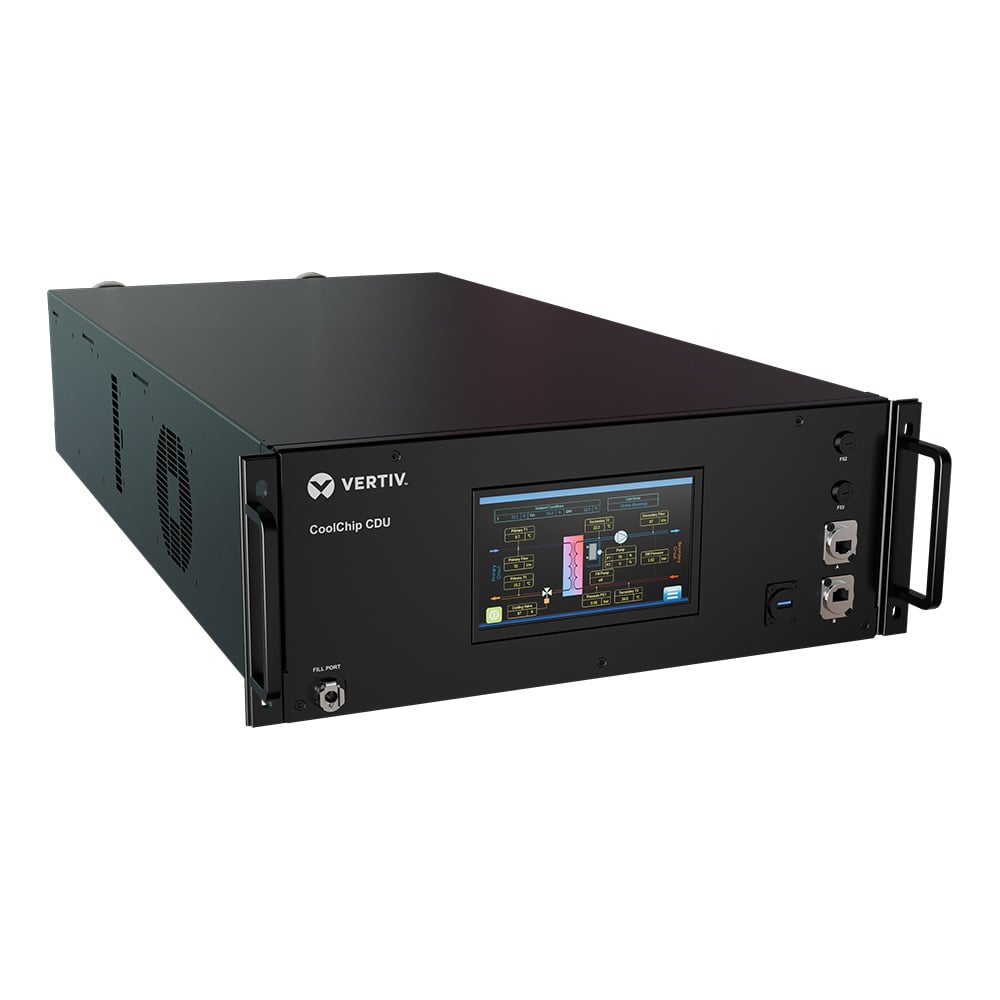
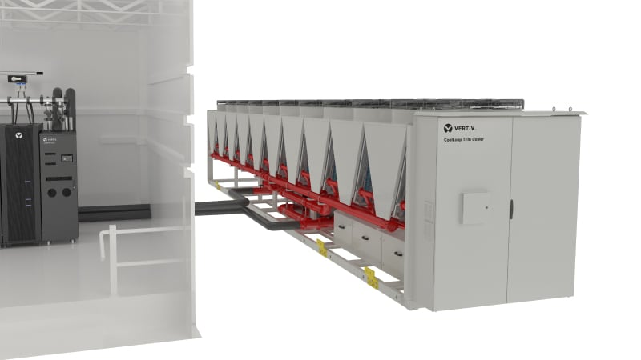

Vertiv (VRT)
W kontekscie: Naziemny bottleneck energetyczny i sieciowy
Czym jest spółka. Vertiv Holdings Co to globalny dostawca krytycznej infrastruktury cyfrowej dla centrów danych - sprzętu, który stoi pomiędzy gniazdkiem zasilającym a procesorem i utrzymuje obiekt przy życiu. W tym temacie chodzi o połowę zasilającą tej układanki: zasilacze awaryjne UPS (urządzenie z baterią zapewniające ciągłość prądu w razie zaniku sieci), rozdzielnie switchgear (zestaw aparatury rozdzielającej i zabezpieczającej przepływ energii), szynoprzewody busbar, rozdzielnice rackowe (PDU) oraz całe prefabrykowane moduły zasilania. Vertiv produkuje pełny tor zasilania od strony obiektu (facility power) aż do szafy serwerowej - to, co firma w swoich materiałach nazywa łańcuchem "grid-to-chip".
Dlaczego to ważne w obecnym wąskim gardle. Wyścig o moc dla AI często rozbija się nie tylko o cenę prądu, ale też o czas dostępu do mocy. Nowe przyłącze do sieci w USA potrafi zająć lata (kolejki przyłączeniowe, wieloletnie dostawy transformatorów i switchgear), co rozwija wątek Kolejki przyłączeniowe i ograniczenia sieci oraz Brak transformatorów i switchgear: lead times. Vertiv ma ekspozycję na część tego wąskiego gardła - sam jest jednym z dostawców switchgear, których brakuje, i w 2024 r. podwoił zdolności produkcyjne dla switchgear, busbar i rozwiązań zintegrowanych (po przejęciu E&I Engineering z 2021 r.), otwierając nowe fabryki w Pune w Indiach, Pelzer w Karolinie Południowej i Londonderry w Irlandii Północnej (SEC 10-K 2024, 18.02.2025). Może to skracać czas wdrożenia po stronie obiektu nawet wtedy, gdy samo przyłącze do sieci jest zatkane (o ile - spółka nie ujawnia konkretnego skrócenia lead-time'u).
Nowe obszary energii dla DC. Wąskie gardło sieciowe popycha operatorów ku generacji "za licznikiem", a Vertiv dołożył do oferty kilka inicjatyw: prefabrykowany system zasilania awaryjnego Vertiv Power Module H2 na ogniwach paliwowych PEM (350-3 000 kW netto, współpraca z Ballard Power Systems), integrator power-train Vertiv PowerNexus (oszczędność miejsca do 30%), magazyny DynaFlex BESS, a także rozwojowe współprace z Oklo (zaawansowana energia jądrowa, SMR) i Caterpillar/Solar Turbines (turbiny gazowe w układzie CCHP) - co dotyka wątku Energia: baseload, powrót do gazu/jądra, SMR dla DC (broszura Vertiv, maj 2025; komunikaty prasowe). Te obszary są jednak wczesne i według szacunku autora stanowią poniżej 5% przychodów - spółka nie ujawnia osobnej linii "new energy", więc to szacunek niepotwierdzony w źródłach, oparty na braku materialnego udziału tych produktów w raportach segmentowych (szacunek autora, niepotwierdzony).
Dla inwestora: ekspozycja Vertiv na temat jest niemal kierunkowa - im dłuższe kolejki przyłączeniowe i dłuższe lead-time'y na switchgear/transformatory, tym cenniejszy staje się dostawca, który ten sprzęt produkuje i potrafi zintegrować w gotowy moduł. Popyt jest mniej wrażliwy na cenę, a bardziej na dostępność i czas wdrożenia.
Materiały spółki
Grafiki z materiałów spółki / IR (prawa właściciela, użycie redakcyjne). Pełny rejestr:
Spolki/assets/_licencje.json.

1. Vertiv™ CoolChip CDU 121 - produktowy rendering jednostki CDU. Źródło: www.vertiv.com; licencja: materiały spółki / IR - prawa właściciela, użycie redakcyjne.

2. Vertiv™ CoolLoop Trim Cooler - kampania produktowa. Źródło: www.vertiv.com; licencja: materiały spółki / IR - prawa właściciela, użycie redakcyjne.
W kontekscie: Chłodzenie i radiacyjne odprowadzanie ciepła
Czym jest spółka w tym temacie. Druga połowa stacku Vertiv to zarządzanie ciepłem (thermal management) - i to właśnie tu leży historyczne dziedzictwo firmy. Vertiv wywodzi się z Liebert Corporation (1965), pioniera precyzyjnego klimatyzowania pomieszczeń komputerowych. Precision cooling (chłodzenie precyzyjne, utrzymujące ściśle kontrolowaną temperaturę i wilgotność w serwerowni, w odróżnieniu od zwykłej klimatyzacji komfortu) pod marką Liebert to do dziś rdzeń oferty: chillery, free cooling, wymienniki ciepła. To kompetencja "odprowadzania ciepła" w warunkach naziemnych - analogiczna problemowo do orbitalnego odprowadzania ciepła, choć technologicznie odmienna (na Ziemi mamy do dyspozycji powietrze i wodę, w próżni zostaje samo promieniowanie, co rozwija Mechanizm: dlaczego w próżni liczy się tylko promieniowanie).
Dlaczego chłodzenie cieczowe jest teraz kluczowe. Gęstość mocy szaf AI wzrosła do 60-130 kW na szafę - platformy NVIDIA GB200 i GB300 NVL72, docelowo zmierzając ku 1 MW+ (prezentacja inwestorska Vertiv 2024). Przy najwyższych gęstościach chłodzenie powietrzem staje się trudne lub nieefektywne i konieczne jest liquid cooling (chłodzenie cieczą, która ma wielokrotnie wyższą pojemność cieplną niż powietrze) - bezpośrednio na chipach (direct-to-chip cold plates) albo przez zanurzenie (immersion). To dokładnie problem opisany w Gęstość mocy chipów AI a ekstrakcja ciepła bez wody i powietrza. Vertiv odpowiada portfolio CoolChip CDU (jednostki dystrybucji cieczy chłodzącej - Coolant Distribution Unit), rear-door heat exchangers (RDHx), CoolCenter immersion i free-coolingowym CoolLoop Trim Cooler. Flagowy CoolChip CDU 2300 oferuje 2 300 kW pojemności chłodniczej i obsługuje 2x NVIDIA GB200 NVL72 (prezentacja inwestorska Vertiv 2024; strona produktu). Przejęcie CoolTera w grudniu 2023 r. wzmocniło portfel patentowy i kompetencje w liquid cooling.
Woda i lokalizacja. Chłodzenie cieczowe zamyka też obieg wody - temat sporów lokalnych i susz, który dotyka Technologie: heat pipes, pętle, układy dwufazowe i radiatory rozkładane po stronie technologii pętli oraz wątek wodny opisany w Woda chłodząca: zużycie, spory lokalne, susze. Rozwiązania trim-cooler i free-cooling Vertiv mają tu zmniejszać zużycie wody i poprawiać PUE.
Dla inwestora: przejście rynku z chłodzenia powietrznego na cieczowe to dla Vertiv zarazem szansa i ryzyko - flagowy CoolChip i marka Liebert dają przewagę, ale tempo adaptacji jest szybkie i opóźnienie w produktach mogłoby oznaczać utratę udziału na rzecz wyspecjalizowanych graczy liquid cooling.
Ekspozycja na temat w liczbach
Skala i dynamika. FY 2024 (zakończony 31.12.2024): przychód 8 011,8 mln USD (+16,7% r/r) z 6 863,2 mln USD, zysk operacyjny GAAP 1 367,4 mln USD (+56,8%), marża operacyjna GAAP 17,1% (+440 pb), zysk netto GAAP 495,8 mln USD (+7,7%), EPS rozwodniony 1,28 USD (SEC 10-K 2024, 18.02.2025). FY 2025 (zakończony 31.12.2025) zamknął się przychodem 10 229,9 mln USD i skorygowanym EPS 4,20 USD, powyżej wcześniejszego guidance 10 160-10 240 mln USD / 4,07-4,13 USD; marża operacyjna skorygowana FY 2025 wyniosła 20,4% (+100 pb r/r) przy skorygowanym zysku operacyjnym 2 089,7 mln USD (+35% r/r) (earnings release Q4 2025, 11.02.2026). Najnowszy raportowany kwartał Q4 2025 (zakończony 31.12.2025) przyniósł przychód 2 880,0 mln USD (+23% r/r, +19% organicznie), zamówienia organiczne +25,2% r/r oraz wzrost rozwodnionego EPS +200% (skorygowany EPS +37%); marża operacyjna skorygowana Q4 2025 sięgnęła 23,2% (+170 pb r/r) przy skorygowanym zysku operacyjnym 668,1 mln USD (+33% r/r), a marża operacyjna GAAP wyniosła 20,1% (earnings release Q4 2025, 11.02.2026). Dla porównania Q3 2025 (zakończony 30.09.2025): przychód 2 675,8 mln USD (+29,0% r/r), organicznie +28,4%, zysk operacyjny skorygowany 595,6 mln USD (+42,9%), marża operacyjna skorygowana 22,3% (+220 pb), zysk netto GAAP 398,5 mln USD (+125,6%), EPS skorygowany 1,24 USD (+63%) (earnings release Q3 2025, 22.10.2025).
xychart-beta
title "Przychody Vertiv (mln USD)"
x-axis ["FY2023", "FY2024", "FY2025"]
y-axis "mln USD" 0 --> 11000
bar [6863, 8012, 10230]
Rys. - Trajektoria przychodów; FY2025 to wynik faktyczny 10 229,9 mln USD. Dane: Vertiv 10-K 2024 i earnings Q4 2025.
Ile z tego to temat? Brak osobnego segmentu. Vertiv raportuje wyłącznie segmenty geograficzne (Americas, APAC, EMEA) i podział produkty/usługi - nie wydziela osobnej linii "power" ani "cooling". W Q3 2025 sprzedaż regionalna to Americas 1 712,4 mln USD (64%), APAC 519,8 mln USD (19%), EMEA 443,6 mln USD (17%) (earnings Q3 2025); w całym FY 2025 region Americas stanowił 62% sprzedaży (Vertiv Annual Report 2025). W całym FY 2025 produkty stanowiły 8 207,0 mln USD, a usługi/części 2 022,9 mln USD przychodu; w samym Q4 2025 produkty to 2 309,4 mln USD, a usługi/części 570,6 mln USD (earnings release Q4 2025, 11.02.2026). Udział samej naziemnej infrastruktury DC nie jest ujawniany jako osobny procent przychodu, lecz raport roczny 2025 podaje, że segment Data Centers stanowi ~85% przychodów (zaokrąglone) (Vertiv Annual Report 2025). Udział samego liquid cooling to natomiast NIE UJAWNIONE - spółka nie raportuje osobnej linii liquid cooling ani jego procentowego udziału w sprzedaży lub backlogu (earnings release Q4 2025; Annual Report 2025). Proxy rynkowe: globalny rynek chłodzenia cieczowego DC szacowany na 4,8 mld USD w 2025 r., a Vertiv wymieniany jako lider z udziałem >11,3% (top 5 łącznie ~35%) - co implikuje rząd wielkości ~0,5 mld USD, ale jest to proxy rynkowe, nie zadeklarowany przychód spółki (GMInsights, Data Center Liquid Cooling Market, styczeń 2026, dane 2025). Dynamicznie: według Dell'Oro przychody z Direct Liquid Cooling rosły +85% r/r w Q3 2025, a cały rynek liquid cooling był na kursie do ponad 2,0 mld USD rocznie (Dell'Oro Group, grudzień 2025, dane Q3 2025).
Backlog i jakość zamówień. Backlog na koniec Q4 2025 wzrósł do 15,0 mld USD (+109% r/r; +57% sekwencyjnie z Q3 2025), a book-to-bill sięgnął ~2,9x - czyli spółka zapisała ok. 2,9 raza więcej zamówień niż zrealizowała w przychodach, co gwałtownie powiększa backlog; większość backlogu jest uznawana za wiążącą i ma być realizowana w ciągu 12-18 miesięcy (earnings release Q4 2025, 11.02.2026; Annual Report 2025, sekcja Backlog). Dla porównania na koniec Q3 2025 backlog wynosił 9,5 mld USD (+30% r/r; +12% sekwencyjnie z Q2 2025) przy book-to-bill ~1,4x (ok. 40% więcej zamówień niż przychodu) (earnings release Q3 2025). Bilans jest mocny: na koniec Q4 2025 gotówka 1 728,4 mln USD, dług długoterminowy netto 2 892,1 mln USD, a dźwignia netto ~0,5x (spadek z 1,0x na koniec 2024) (earnings release Q4 2025). Pod presją ekspansji mocy produkcyjnych spółka zapowiada wzrost nakładów inwestycyjnych (CapEx) do 3-4% sprzedaży w 2026 r. (historycznie 2-3%) (earnings call Q4 2025, 11.02.2026).
Dla inwestora: backlog 15,0 mld USD przy book-to-bill ~2,9x (Q4 2025) daje wysoką widoczność przyszłych przychodów, ale brak osobnego segmentu "data center" oznacza, że dokładny udział tematu w sprzedaży trzeba szacować proxy - spółka go nie ujawnia.
Kluczowe umowy/wdrozenia - co znacza
Vertiv nie ujawnia wartości pojedynczych kontraktów (w odróżnieniu od wielkości backlogu), więc poniższe wdrożenia mają charakter referencyjny i jakościowy:
- NVIDIA (referencyjne projekty): Vertiv jest partnerem w ekosystemie AI dostarczającym referencyjne architektury power i cooling dla platform GB200 i GB300 NVL72 (gęstość 60-130 kW/szafę). To nie jest klasyczny kontrakt na kwotę, lecz pozycja w ekosystemie - tam, gdzie NVIDIA definiuje gęstość, Vertiv dostarcza odprowadzanie ciepła i zasilanie (earnings release Q1 2025). Wartość: NIE UJAWNIONE.
- iGenius (Włochy): kompletne rozwiązanie infrastruktury AI dla włoskiej firmy AI, z zaawansowanym chłodzeniem i zasilaniem dla high-density computing (earnings call Q1 2025). Wartość: NIE UJAWNIONE.
- Compass Datacenters: współpraca przy skalowalnych, prefabrykowanych centrach danych (prezentacja inwestorska 2024). Wartość: NIE UJAWNIONE.
- Przejęcie PurgeRite (ogłoszone 03.11.2025, ukończone 04.12.2025): cena zakupu ok. 1,0 mld USD gotówki plus dodatkowo do 250 mln USD earn-out zależnego od wyników 2026 r., co odpowiada wielokrotności ~10x oczekiwane EBITDA 2026 r. wraz z synergiami; transakcja ma być akretywna dla marży segmentu Services. PurgeRite to mechaniczne płukanie, odpowietrzanie i filtracja płynów chłodzących dla DC, czyli usługi wprost wspierające liquid cooling (komunikat Vertiv, 03.11.2025; prezentacja wyników Q4 2025, 11.02.2026).
- Przejęcie Great Lakes Data Racks & Cabinets (ogłoszone 17.07.2025, ukończone 20.08.2025): cena ok. 200 mln USD przy wielokrotności ~11,5x oczekiwane EBITDA 2026 r. wraz z synergiami; rozszerza portfolio racków, szaf i rozwiązań white space dla AI/edge/hyperscale (komunikat Vertiv, 17.07.2025).
- Przejęcie Waylay NV (26.08.2025): platforma hiperautomatyzacji i generatywnej AI do monitorowania i sterowania zasilaniem oraz chłodzeniem; warunki finansowe NIE UJAWNIONE (komunikat Vertiv, 26.08.2025).
- Łączne wydatki na akwizycje (cash flow FY 2025): 1 184,8 mln USD netto, w tym 989,1 mln USD w samym Q4 2025 (głównie zamknięcie PurgeRite) (earnings release Q4 2025, 11.02.2026). Konkretny wpływ przychodowy poszczególnych akwizycji w 2026 r.: NIE UJAWNIONE.
Wymowa tych wdrożeń jest taka, że Vertiv sprzedaje nie pojedyncze pudełka, lecz zintegrowany capex infrastruktury - moduł zasilania plus chłodzenia plus serwis - co podnosi wartość kontraktu na klienta i wiąże odbiorcę przez cykl życia obiektu.
Dla inwestora: brak ujawnianych wartości pojedynczych umów to świadoma polityka spółki - sygnałem do śledzenia jest agregat (backlog 15,0 mld USD, book-to-bill ~2,9x w Q4 2025), a nie pojedyncze ogłoszenia. To utrudnia ocenę koncentracji na konkretnym kliencie.
Pozycja rynkowa i udzialy
Vertiv deklaruje pozycję #1 w wybranych kategoriach obu nóg swojego stacku. W zarządzaniu ciepłem (thermal management) firma wskazuje pozycję #1 za raportem Dell'Oro (Worldwide Data Center Physical Infrastructure 2025) - co spółka potwierdza w raporcie rocznym 2025 (Dell'Oro Group, cyt. w Vertiv Annual Report 2025; wcześniejszy komunikat Dell'Oro 12.03.2024). W rozdzielniach, dystrybucji i UPS-ach 3-fazowych powyżej 250 kVA oraz infrastrukturze dystrybucji zasilania (busway, RPP, STS, 3-phase PDU) Vertiv wskazuje również #1 za danymi Omdia (UPS Hardware Market Tracker 2025 dla >250 kVA oraz Omdia Ultimate Power Study, grudzień 2025) (Omdia, cyt. w Vertiv Annual Report 2025). Uwaga: liderstwo w power dotyczy wąsko zdefiniowanej kategorii (switching/UPS >250 kVA), a nie całego rynku UPS dla DC, gdzie Vertiv nie jest liderem (patrz niżej). W globalnym rynku UPS dla centrów danych Vertiv plasuje się w top 5; liderem jest tu Schneider Electric z ~24,3% rynku w 2024 r., a top 5 (Eaton, Schneider, Vertiv, ABB, Delta) łącznie kontroluje ~60% (GMInsights, Data Center UPS Market 2025, dane 2024). W chłodzeniu cieczowym (liquid cooling) Vertiv jest wymieniany jako lider rynku z udziałem >11,3% w 2025 r. (top 5 łącznie ~35%) (GMInsights, Data Center Liquid Cooling Market, styczeń 2026, dane 2025). W szerokim rynku Data Center Physical Infrastructure (DCPI) Vertiv i Schneider Electric byli w Q1 2025 praktycznie ex aequo - różnica udziału globalnego wynosiła zaledwie 0,1 pkt proc. (Dell'Oro Group, lipiec 2025, dane Q1 2025). W rynku infrastruktury zasilania dla AI data center udział Vertiv szacowany jest na ~9% w 2025 r. (Alora Advisory 2032 Outlook).
pie title Rynek UPS dla data center 2024 (% udzialu)
"Schneider Electric" : 24
"Vertiv + reszta top 5" : 36
"Pozostali" : 40
Rys. - Schneider liderem UPS DC; Vertiv w top 5, top 5 razem ~60%. Dane: GMInsights 2025.
pie title Rynek liquid cooling DC 2025 (% udzialu)
"Vertiv (lider, >11,3%)" : 11
"Reszta top 5" : 24
"Pozostali" : 65
Rys. - Vertiv lider liquid cooling DC z udziałem >11,3% (top 5 razem ~35%); rynek ~4,8 mld USD w 2025 r. Dane: GMInsights, styczeń 2026.
Skala operacyjna podpiera tę pozycję: ~4 000 inżynierów serwisowych, 310+ centrów serwisowych, ok. 23 fabryki (liczba ze starszej prezentacji 2024; w 2025-2026 spółka dynamicznie rozbudowuje sieć produkcyjną, m.in. nowy obiekt w Johor w Malezji i rozbudowy w USA i Meksyku, więc aktualna liczba jest prawdopodobnie wyższa), działalność w 130+ krajach (prezentacja inwestorska 2024; komunikaty Vertiv 2025-2026). Bariery wejścia to skala produkcyjno-serwisowa, certyfikacje (UL, CE, cULus, RoHS), globalna sieć partnerów, długoletnie relacje z hyperscalerami, colo i telekomami oraz portfel patentowy (m.in. po CoolTera) (10-K; komunikaty prasowe).
Dla inwestora: deklarowane liderstwo (#1 w thermal i #1 w wąsko zdefiniowanej kategorii switching/UPS >250 kVA) plus pełny stack power+cooling pozwala Vertiv sprzedawać zintegrowane rozwiązania - przewaga jest w integracji i skali serwisowej, nie w pojedynczym produkcie. W całym rynku UPS dla DC firma nie jest jednak liderem - tu dominuje Schneider.
Mechanika konkurencji - na osiach
Vertiv konkuruje na dwóch frontach: power (zasilanie/UPS/switchgear) i cooling (precision/liquid), a w każdym przeciw innemu zestawowi rywali.
Power - zasilanie i dystrybucja:
| Konkurent | Główne produkty | Oś konkurencji | Liczby / uwagi | Źródło |
|---|---|---|---|---|
| Schneider Electric | EcoStruxure, Galaxy VXL UPS, APC, Motivair (cooling, przejęte VI.2024 za 850 mln USD) | Portfel, skala globalna, efektywność | #1 w UPS DC z ~24,3% rynku 2024 | GMInsights 2025 |
| Eaton | UPS, switchgear, PDU, EnergyAware | Niezawodność, integracja z siecią, medium voltage | w top 5 UPS; mocny w power distribution | MarketsandMarkets 2025 |
| ABB | PowerValue UPS, MV switchgear, elektryfikacja | Automatyka, przemysł, integracja HV | ~10% rynku AI DC power infrastructure (szacunek) | Alora Advisory 2026 |
Cooling - precyzyjne i cieczowe:
| Konkurent | Główne produkty | Oś konkurencji | Liczby / uwagi | Źródło |
|---|---|---|---|---|
| Stulz | Precyzyjne klimatyzowanie DC, chłodzenie cieczowe | Wydajność chłodzenia, niemiecka jakość | Mocny w Europie i Azji; wymieniany jako lider cooling | raporty rynkowe |
| nVent | Infrastruktura rack, thermal, cooling-power coupling | Gęstość, modularność | Konkuruje w warstwie cooling-power integration | Alora Advisory 2026 |
| CoolIT, Asetek, Iceotope, Submer, GRC | Direct-to-chip, immersion | Specjalizacja w cieczy, szybkość wdrożeń | Pure-play liquid cooling; rosnący udział w AI DC | branża/analitycy |
Mechanizm jest taki, że Schneider, Eaton i ABB inwestują w liquid cooling i high-density power (Schneider kupił Motivair właśnie po to), więc presja idzie z dwóch stron jednocześnie: dużych konglomeratów elektroenergetycznych w power oraz wyspecjalizowanych pure-playów w liquid cooling. Vertiv broni się tempem - w Q3 2025 rośnie organicznie +28% wobec szacowanego wzrostu rynku ~15-20%, co sugeruje potencjalne zdobywanie udziału (jeśli szacunek tempa rynku jest porównywalny), a nie utratę (earnings call Q3 2025).
Dla inwestora: spadek udziału rynkowego obniżyłby tempo wzrostu przychodów - kluczowy do śledzenia jest wzrost organiczny względem rynku. Dopóki Vertiv rośnie szybciej niż rynek, broni przewagi mimo wejścia Schneidera (Motivair) i pure-playów w liquid cooling.
Koncentracja odbiorcow i ryzyka z mechanizmem
Koncentracja odbiorców. Vertiv w 10-K za 2024 r. wprost podaje, że żaden pojedynczy klient nie odpowiadał za ponad 10% całkowitej sprzedaży netto w żadnym z przedstawionych okresów; ta sama zasada obowiązuje w raporcie rocznym za 2025 r. - spółka nie ujawnia nazw ani procentów największych klientów (SEC 10-K 2024, 18.02.2025; Vertiv Annual Report 2025). Udział samych hyperscalerów w sprzedaży to natomiast NIE UJAWNIONE. Proxy wskazuje na silną koncentrację geograficzną i projektową: segment Data Centers stanowi ~85% przychodów, region Americas 62% sprzedaży w FY 2025, a popyt jest skupiony w dużych projektach AI dla hyperscalerów i colo - top 10 dostawców chmury w segmencie DCPI rosło ponad +30% r/r wg Dell'Oro (Vertiv Annual Report 2025; Dell'Oro Group, dane Q3 2025). Sama spółka w 10-K wskazuje na ryzyko "mniej korzystnych warunków umownych z dużymi klientami" - duzi odbiorcy mogą wywierać presję cenową, anulować lub zmieniać zamówienia oraz wydłużać cykle sprzedaży.
Ryzyka z mechanizmem:
- Łańcuch dostaw / single-source. 10-K wprost wskazuje, że część materiałów i komponentów pochodzi od dostawców jednoźródłowych (single-source) ze względu na technologię, dostępność, cenę i jakość; awaria lub zamknięcie takiego dostawcy opóźnia produkcję i podbija koszty. Lista i % obrotu: NIE UJAWNIONE (10-K 2024, Item 1A).
- Taryfy / konflikty handlowe. Nowe taryfy USA i odwetowe taryfy zagraniczne podnoszą koszt materiałów i gotowych produktów; jeśli nie zostaną przerzucone na klientów, obniżają marżę. W Q1 2025 taryfy obniżyły guidance marży FY 2025 o ~100 pb względem scenariusza bazowego, jednak marża operacyjna skorygowana i tak rosła mimo "wpływu taryf" - do 22,3% (+220 pb r/r) w Q3 2025 i do 23,2% (+170 pb r/r) w Q4 2025. Zarząd (CFO) zapowiedział, że spodziewa się materialnego zniwelowania niekorzystnego wpływu taryf na marżę już od Q1 2026; konkretna kwota kosztu taryf w raportowanym kwartale pozostaje NIE UJAWNIONE (10-K 2024; earnings Q1, Q3 i Q4 2025; earnings call Q4 2025, 11.02.2026).
- Cykl technologiczny. Szybki wzrost gęstości szaf (AI 60-130 kW, docelowo 1 MW+) wymusza przejście na liquid cooling; opóźnienie w adaptacji produktów grozi utratą udziału. Vertiv zwiększył nakłady na rozwój produktów (engineering/R&D wg materiałów spółki - dokładna definicja i linia GAAP do potwierdzenia w 10-K) z ~200 mln USD w 2023 do 350+ mln USD w 2024 i przejął CoolTera (XII.2023), by się przed tym zabezpieczyć (prezentacja inwestorska 2024; 10-K).
- Konkurencja / presja cenowa. Schneider, Eaton, ABB i Stulz inwestują w liquid cooling i high-density power; presja cenowa mogłaby obniżyć wzrost (mechanizm opisany w sekcji konkurencji).
- Ryzyko wykonawcze backlogu. Backlog 15,0 mld USD (koniec Q4 2025) oznacza widoczność, ale i ryzyko - zamówienia mogą być opóźnione, anulowane lub poddane presji kosztowej; 10-K osobno zaznacza ryzyko realizacji backlogu (10-K; earnings Q4 2025).
- Zadłużenie / stopy. Dług długoterminowy 2 928,2 mln USD na koniec 2024 (Term Loan 6,19%); podwyżki stóp zwiększają koszt obsługi. W Q3 2025 odsetki netto spadły do 22,8 mln USD dzięki restrukturyzacji długu, a leverage netto do 0,5x (10-K 2024; Q3 2025).
Dla inwestora: najtwardszy mechanizm ryzyka to splot koncentracji na hyperscalerach (popyt zależny od decyzji capex kilku gigantów AI) z łańcuchem dostaw single-source - jeśli jeden duży klient wstrzyma program albo zawiedzie kluczowy dostawca, efekt przełoży się na przychód i marżę szybciej niż sugeruje wielkość backlogu.
Powiązane spółki
Inne notowane spółki z raportu dzielące z tą firmą co najmniej jeden wątek tematyczny (wspólny rynek, technologia lub łańcuch wartości).
- Eaton Corporation plc (ETN) - Zasilanie DC (UPS, switchgear) + chłodzenie (Boyd Thermal)
Wspólne wątki: Naziemny bottleneck; Chłodzenie. - Airbus SE (AIR) - PV (Sparkwing), optyka (Tesat), busy, serwis (EU)
Wspólne wątki: Chłodzenie. - Bloom Energy Corporation (BE) - Ogniwa paliwowe SOFC dla centrów danych
Wspólne wątki: Naziemny bottleneck. - Constellation Energy Corporation (CEG) - Największy operator floty jądrowej w USA (PPA z hyperskalerami)
Wspólne wątki: Naziemny bottleneck. - GE Vernova Inc. (GEV) - Turbiny gazowe i infrastruktura sieciowa dla DC
Wspólne wątki: Naziemny bottleneck. - Northrop Grumman Corporation (NOC) - Serwis GEO (MEV/MRV), busy, radiatory, ogniwa
Wspólne wątki: Chłodzenie. - Oklo Inc. (OKLO) - Mikroreaktory (SMR/fission) na potrzeby DC
Wspólne wątki: Naziemny bottleneck. - RTX Corporation (RTX) - ADCS (Blue Canyon), termika (Collins Aerospace)
Wspólne wątki: Chłodzenie. - Redwire Corporation (RDW) - Panele ROSA, struktury rozkładane, montaż on-orbit, radiatory Q-Rad
Wspólne wątki: Chłodzenie. - Schneider Electric SE (SU) - Zasilanie i chłodzenie DC (EcoStruxure, Motivair)
Wspólne wątki: Naziemny bottleneck. - Siemens Energy AG (ENR) - Turbiny gazowe i technologie sieciowe (EU)
Wspólne wątki: Naziemny bottleneck. - Talen Energy Corporation (TLN) - Energia jądrowa (Susquehanna), sąsiedztwo z DC
Wspólne wątki: Naziemny bottleneck.
Slowniczek
- UPS - zasilacz awaryjny z baterią, zapewniający ciągłość prądu w razie zaniku sieci.
- Switchgear / rozdzielnia - zestaw aparatury elektrycznej rozdzielającej, sterującej i zabezpieczającej przepływ energii w obiekcie; jeden z elementów o długich lead-time'ach.
- Precision cooling - chłodzenie precyzyjne, utrzymujące ściśle kontrolowaną temperaturę i wilgotność w serwerowni; rdzeń marki Liebert.
- Liquid cooling - chłodzenie cieczą (direct-to-chip lub immersion); konieczne przy wysokiej gęstości mocy AI, gdy powietrze nie wystarcza.
- CDU (Coolant Distribution Unit) - jednostka dystrybucji cieczy chłodzącej w układach direct-to-chip i RDHx.
- Backlog - wartość złożonych, niezrealizowanych jeszcze zamówień; wyższy = lepsza widoczność przyszłych przychodów.
- Book-to-bill - stosunek nowych zamówień do przychodu w okresie; >1 oznacza rosnący backlog.
- Capex - nakłady inwestycyjne; tu w znaczeniu wydatków operatorów DC na infrastrukturę dostarczaną przez Vertiv.
- Hyperscaler - gigant chmury (Microsoft, Google, Amazon, Oracle) budujący centra danych na ogromną skalę.
Terminy lokalne (poza listą słownika): PDU - rozdzielnica rackowa dystrybuująca zasilanie do serwerów; busbar/szynoprzewód - szyna przewodząca prąd między rozdzielnicą a szafami; direct-to-chip - chłodzenie cieczą bezpośrednio na chipach przez cold plates; immersion - zanurzenie serwerów w cieczy dielektrycznej; RDHx - rear-door heat exchanger, wymiennik w drzwiach szafy; PUE - współczynnik efektywności energetycznej DC; leverage netto - dług netto do EBITDA.
Linkują tutaj
15 powiązanych notatek
- Mapa raportu Orbitalne / kosmiczne centra danych
- Sekcja Chłodzenie i radiacyjne odprowadzanie ciepła
- Sekcja Naziemny bottleneck energetyczny i sieciowy
- Spółka Airbus (AIR)
- Spółka Bloom Energy (BE)
- Spółka Constellation Energy (CEG)
- Spółka Eaton (ETN)
- Spółka GE Vernova (GEV)
- Spółka Northrop Grumman (NOC)
- Spółka Oklo (OKLO)
- Spółka Redwire (RDW)
- Spółka RTX (RTX)
- Spółka Schneider Electric (SU)
- Spółka Siemens Energy (ENR)
- Spółka Talen Energy (TLN)